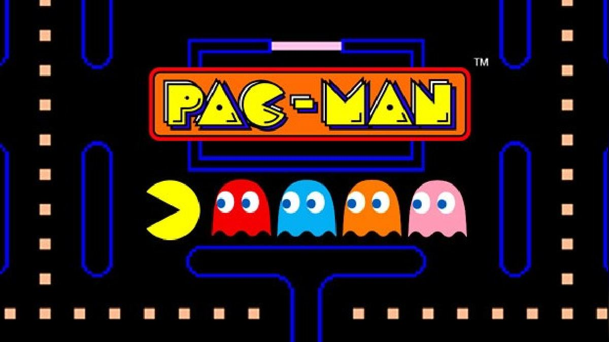
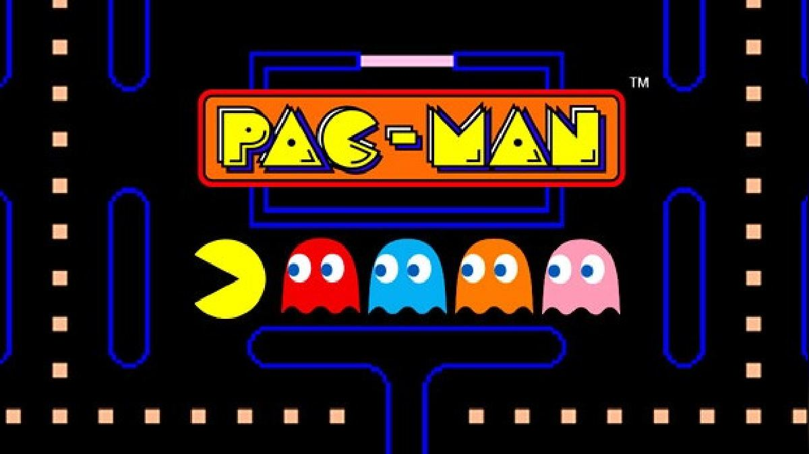

La inspiración El juego no se llamaba Pac-Man en aquel entonces, sino PuckMan, que ofrece una idea de sus orígenes. “Paku paku taberu” es una frase japonesa popular para engullir algo: “paku paku” imita el sonido de una boca chasqueando y “taberu” significa “comer”. “Empecé asumiendo que temas como la moda y el romance podrían ser los más adecuados para un públi - co femenino”, dijo Iwatani. “Pero luego pensé, y esto puede haber sido presuntuoso de mi parte, que las mu - jeres también disfrutan el acto de comer —o ‘taberu’ en japonés— y así es como me encontré centrado en esta palabra clave y el acto de comer como un concepto”. El diseñador de videojuegos Toru Iwatani creó PacMan, en 1980. Cortesía de Bandai Namco Sin embargo, cuando el juego llegó a Estados Unidos, el nombre Puc - kMan se consideró inapropiado. Aunque el personaje ti - tular se parecía un poco a un disco de hockey, el distri - buidor estadounidense del juego, Midway, temía que los niños cambiaran la “P” por una “F”. Después de cambiar su nombre, el juego se convirtió en un éxito instantáneo, con casi 300.000 unidades vendidas en todo el mundo, en - tre 1981 y 1987. El legado Pac-Man generó innumerables secuelas, la más popular de las cuales fue Ms. Pac-Man. También allanó el camino para títulos basados en la narrativa como “Donkey Kong”, ofreciendo a los juegos una salida del tipo videojuegos de disparos.


Jefe de empresa Igualmente, una pregunta de lo más interesante de la en - trevista es sobre qué tipo de jefe cree que es y Shigeru Miyamoto comenta que cuando la gente lo mira, probable - mente imaginan que es muy simpático. No obstante, si se preguntara a la gente en primera línea de batalla, aque - llos que trabajan codo con codo con él, lo más seguro es que dijeran que es muy exigente y que siempre comenta cosas sobre su trabajo. En este trabajo, cran productos, lo cual requiere una gran planificación, pero también es muy importante hablar de esos planes con un registro di - ferente, no solo como un producto, sino también como un sueño o una visión.

“A fines de la década de 1970,
las salas de juego estaban llenas
de videojuegos violentos sobre
matar alienígenas. Eran lugares
sombríos donde solo los niños
iban a pasar el rato. Lo que
quería hacer era convertir las
salas de juego en lugares más
animados para que las mujeres
y las parejas pudieran disfrutar
y visitar, así que pensé que era
mejor diseñar un juego pensado
en las mujeres”.
Un hombre juega Pac-Man en una feria en Colonia,
Alemania, en 2019. Ina Fassbender/AFP/Getty Images
Iwatani trabajó por última vez en un título de Pac-Man
en 2007, y ahora enseña diseño de juegos en la Univer
-
sidad Politécnica de Tokio. No está demasiado impresio
-
nado con los juegos modernos, y dice que al adaptarse
a los teléfonos inteligentes y otras pantallas pequeñas,
las ideas detrás de ellos también se han vuelto pequeñas.
“Cuando se lanzó Pac-Man, los videojuegos todavía eran
algo nuevo e inusual para todos menos para los fanáticos
de los juegos. Para muchas personas, creo que terminó
siendo su primera experiencia con un videojuego”
“Siempre es complejo crear un juego que la
gente pueda dejar en cualquier momento,
para que estos no arruinen a las personas,
pero que trabaja duro para que la gente no
sienta que está perdiendo su tiempo.”
Asimismo, cuando se le pregunta sobre el abuso de po
-
der que ha ocurrido últimamente en la industria comenta
que, puesto que el oficio se trata de crear nuevas expe
-
riencias, es normal que siempre haya un cierto sentido de
inseguridad y de preocupación. Él cree que se trata
de un apoyo para el equipo, en lugar de un líder
creativo, por lo que, antes de enterrar las ideas
del resto de personas, ya que sabe bien que exis
-
te cierta vulnerabilidad cuando se presenta una
idea o un concepto, lo que intenta es hacer suge
-
rencias basadas en lo que ha visto.
El creativo cree que su punto fuerte es que puede crear
una buena imagen de en lo que puede convertirse un pro
-
yecto. Sin embargo, cree que el sentimiento de éxito para
con un producto solo puede llegar una vez que los jugado
-
res han disfrutado el título y que, antes de ese punto, la
gente puede verlo como un jefe malo.
 
